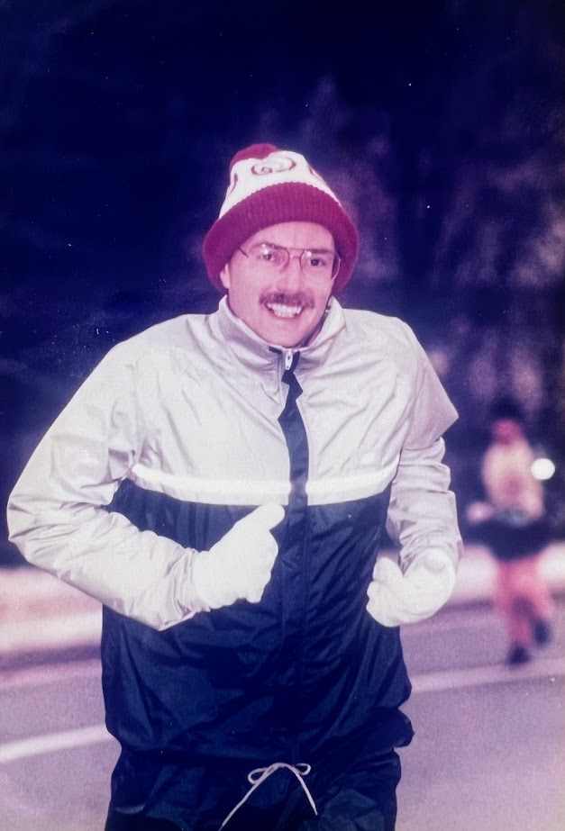

What's your one thing?
Most of us can point to a single moment, loss, or lesson that shaped everything after it. A turning point. A wake-up call. A shift in how we see the world, and ourselves.
For me, I can think of a top five. But the one thing that truly changed everything happened when I was just 22 years old: my dad passed away.
It hit me hard. My whole life, I had this quiet drive to make him proud. Not because he was hard to please. He wasn't. I always felt loved and supported. But I had this deep inner desire not to disappoint him. If he questioned a grade or offered advice, I took it seriously. Not as criticism, but as guidance. I wanted to keep growing, improving, maybe to reflect the best parts of him back at him.
And then, just like that, he was gone.

At first, it felt like a part of that drive left with him. Like the audience I had been performing for was no longer there. But as time passed, something deeper emerged. I started to realize that I could still live in a way that honored him. That he could still be proud, even if I couldn't hear it. That I didn't need his physical presence to feel his influence. In fact, maybe now, it was even stronger.
Even now, I can feel him watching. Thinking. Smiling. And sometimes, just sometimes, I still imagine the conversations we'd be having. The advice he'd give. The way he'd probably raise his eyebrow at something I said, or be quietly proud of how far I've come.
So yeah, that was my one thing. The moment that changed everything. Not all at once, but slowly, reshaping the way I move through the world, the way I chase purpose, and the way I define success.
Now I'll ask you again…
What's your one thing?